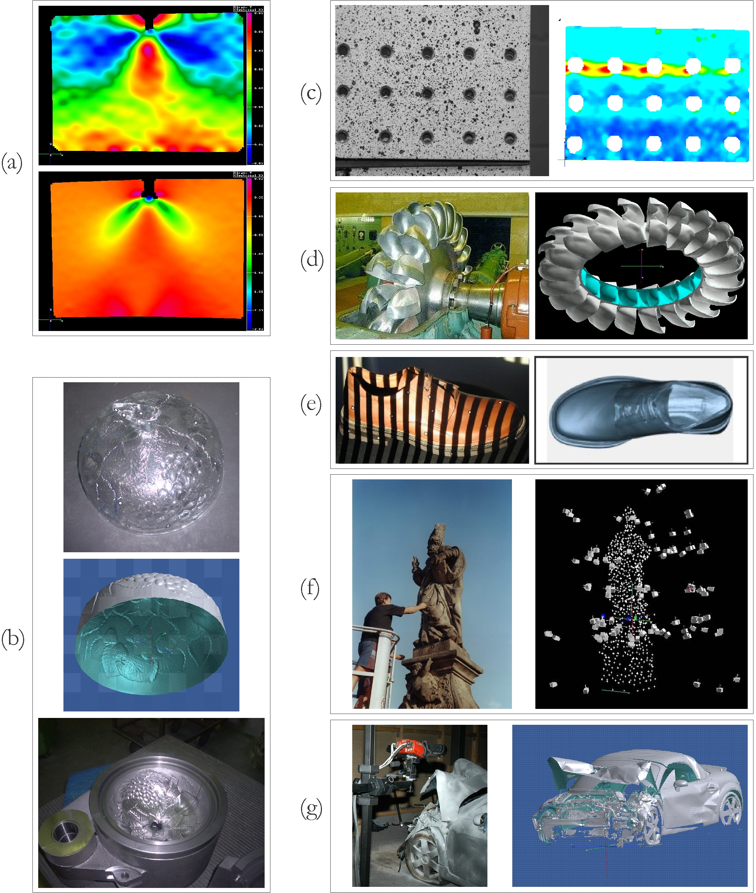

Tho T Nguyen >> Master project
Development of a monocular three-dimensional self-calibrating reconstruction algorithm based on digital photogrammetry
| This two-year research project was conducted in the Lightweight Structure Research Group, Bandung Institute of Technology (Indonesia) under a program to promote and develop engineering education and research capabilities across the region through the ASEAN University Network / Southeast Asia Engineering Education Development Network (AUN/SEED-Net). The program is funded by the Japan International Cooperation Agency (JICA). |
Supervisors: Dr. Tatacipta Dirgantara; Dr. M. Giri Suada; Assoc.Prof. Ichsan Setya Putra.
 Summary
Summary
Photogrammetry, a measurement method raised from geodesy, has been developed with its complete theory since nineteenth century for the early purpose of exactly determining any coordinate in space. Computer vision, even its later appearance in 1970s, can be characterised as a flexible branch of artificial intelligence and robot vision. The combination of photogrammetry and computer vision has created many new applications in human's life due to its excellent properties such as exactitude, fastness, robustness and inexpensiveness.
Conventional scene reconstruction algorithms require the use of calibration artefacts to recover camera information (including camera parameters (intrinsic) and poses (extrinsic)), from which a 3-D point cloud of the real scene will be reconstructed. Those calibration artifacts should indeed have their dimensions relatively as big as the real scene/object, which sometimes not easy to prepare. The need of a robust reconstruction method without the use of calibration artefacts is therefore arised.
The objectives of the thesis are (i) to develop a versatile method to reconstruct scenes and objects in three-dimensions without using any calibration artefact, (ii) to produce an accurate and detailed computational algorithm for the reconstruction as specified in (i), and (iii) to conduct a number of proof-of-principle experiments on real scenes and objects.
The outcomes of the work have shown that
- The developed method proved that without camera calibration, the reconstruction work is much more simple than conventional, and the sensitivity of the reconstruction results to environmental changes, which mainly comes from the calibration process, is reduced.
- A sequence of images is recorded by a semi-professional camera in such a way that the target object/surface is clearly seen from different camera poses.
- An error analysis, which showed a small systematic error of the proposed algorithm, estimated from several synthetic scenarios, was done.
- The method was applied in the reconstruction of a flat surface of a plate and of a part of an aircraft wing surface. The final error of about 1 part in 1000 of the surface size was achieved.
 Figures
Figures

Applications of three-dimensional measurement: (a) Fracture mechanics: strain distribution in y-direction (vertical) without and with crack propagation, (b) Reverse engineering: fast replication of a glass bowls and its mould, (c) Testing material: riveted joint under load, (d) Quality control: 3- D measurement of a water turbine's rotor, (e) Rapid prototyping, (f) Sculptural 3-D visualization, (g) Forensic science.
The proposed three-dimensional self-calibration reconstruction algorithm (five steps).
A sequence of 6 digital images of a 550×550 mm2 wing surface taken from different camera positions and angles.
Wing surface reconstructed from a sequence of digital images. (a) Recovered 3-D point cloud with camera positions, (b) only 3-D point cloud of the wing surface, and (c) its surface filled by Delaunay triangulation.
 Table of Contents / List of Figures / List of Tables [pdf]
Table of Contents / List of Figures / List of Tables [pdf]
Last updated: 30/04/2012